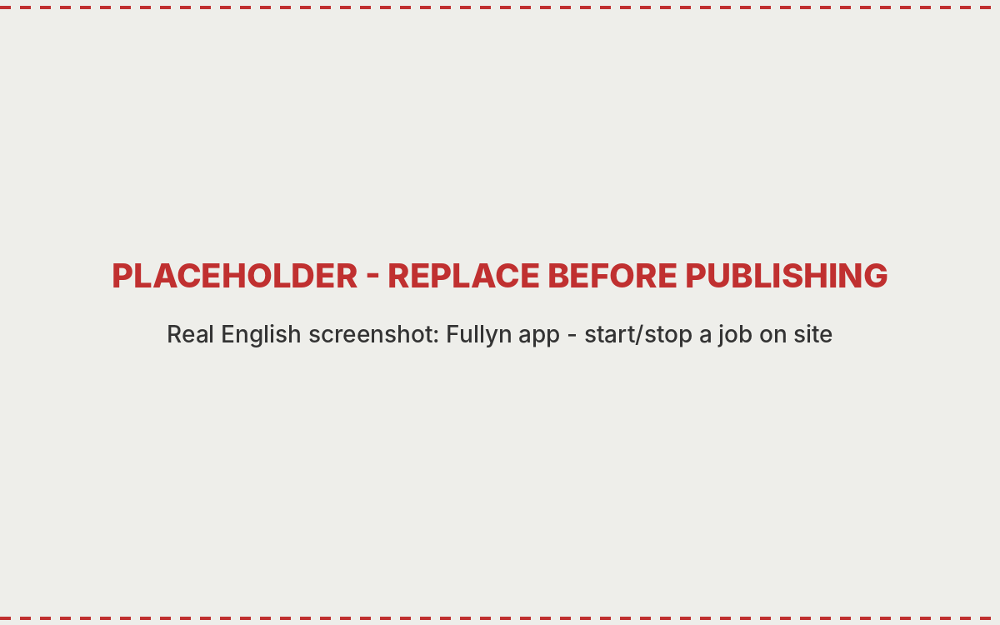
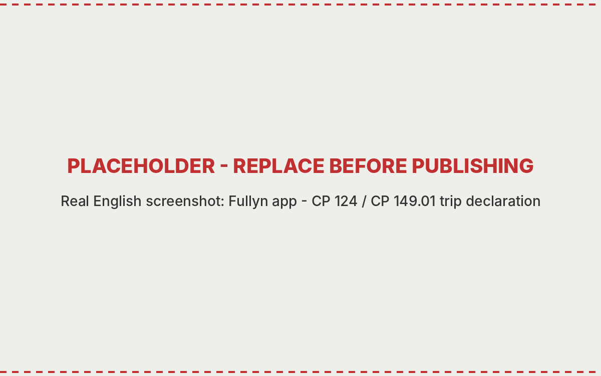
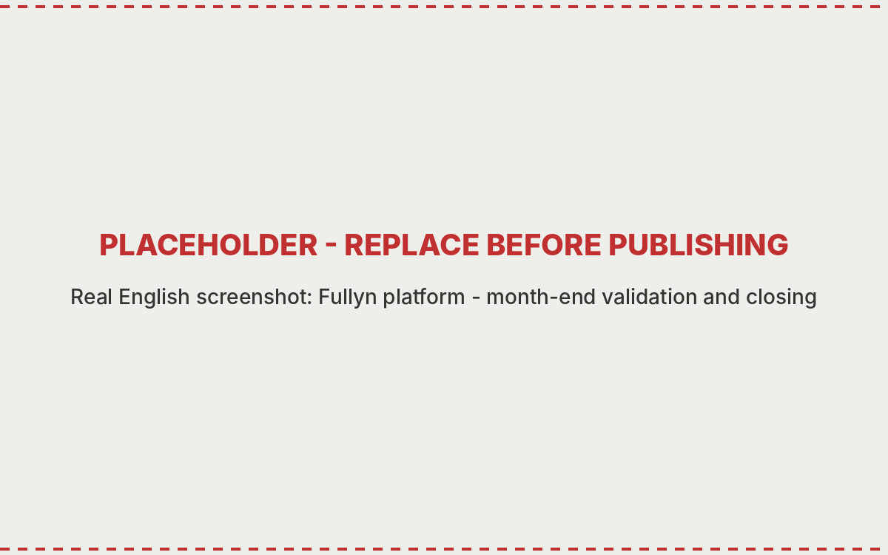

Fullyn app: start and stop a job on site.

Fullyn app: CP 124 / CP 149.01 trip declaration.

Fullyn platform: month-end validation and closing.

This module in Odoo: connection settings and readiness check.